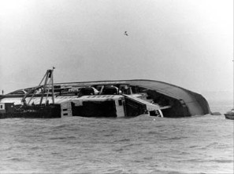
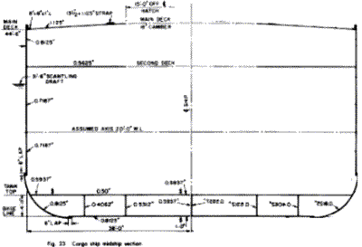
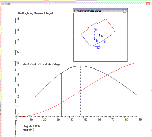
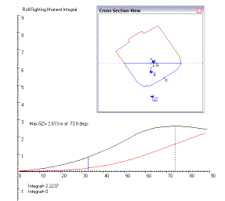
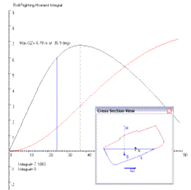
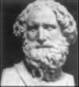
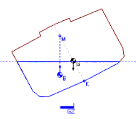

COPYRIGHT Tim Lovett © May 2004
.
.
.
|
Ferry Capsize Disaster Over 190 people died when the roll-on roll-off ferry capsized off Zeebrugge, Belgium on 6 March 1987. The bow doors of the Herald of Free Enterprise had been left open after departure, and water flooded the car decks. This free water made the vessel unstable, capsizing in less than a minute in only 10m of water. Safety regulations were tightened following the disaster. |
 |
Roll is the most important stability criteria. Adequate roll stability keeps the ship from capsizing. However, excessive roll stability is also a problem - giving a ride with uncomfortably high accelerations and rapid rocking movements. So roll stability is normally a compromise between these two extremes.
How much inherent stability is required? This may depend on such factors as;
Navigation in the open sea or sheltered waters?
Special loading issues - cranes, dynamic or uneven loads, passengers crowding to one side to see something?
Significant wind loads - superstructure or sails?
Use of active stabilizers?
Passenger comfort, permissible roll angles?
Variability of loading (changes in draft - such as bulk carrier)
Cargo center of gravity (container ships have difficulty keeping the gravity center low, compared to bulk carrier)
The most significant hull factors governing the roll behavior are;
B. Beam or breadth of the hull
D. Depth of the hull
KG. Distance from the keel to the center of gravity
T. Draft. The depth of the hull in the water - so T/D is the relative density of the ship.
Hull shape.
Genesis 6:15 "And this is how you shall make it: The length of the ark shall be three hundred cubits, its width fifty cubits, and its height thirty cubits.
Clearly, the breadth to depth ratio is 50:30, or B/D = 1.6667. This is fairly typical for a ship, though not so tall and narrow as passenger ships built for comfort and speed (lower stability). These proportions are typical for a cargo ship, the example from Principles of Naval Architecture (SNAME) has B/D = 1.708. (Ref 1)
|
Table 3: Comparison with a real ship: PNA sample hull section modulus. Ref 1 |
||||
|
 |
||||
|
Cross-section amidships for a 19,000 tonne cargo vessel. 528.5 x 76 x 44.5 feet. (161 x 23 x 13.6 m). The B/D ratio is 1.708, very similar to the ark at 1.667. Notice the rectangular shape, the double bottom and the camber on the top deck. The Bilge radius is around 9ft, or 1/ 8th of the beam.
|
Ships are not usually made much wider than this. Why?
The ride gets too rough - both roll and heave accelerations are increased
The hull gets higher forces - wave bending moment is proportional to B
The hull is much weaker - the reduced depth causes a significant lowering of hull section modulus (power of 2)
An extremely squat hull could have insufficient freeboard. (Height of deck above the water)
The following diagrams show variations in the ark's B/D ratio for KG/D = 0.4, and a relative density of 0.35 (perhaps towards the end of the voyage where stability is reduced by a lower cargo mass). Using the average of ancient Babylonian cubits (500mm), the following curves were plotted for roll angles from 0 to 90 degrees. The black curve is GZ in meters, and the red curve is the integral of the GZ curve in (m.Rads).
|
God's Ratio. B/D = 1.6667 The Bible makes it clear that God specified the ark's dimensions, which includes the B/D ratio.
|
 |
|
Tall. B/D = 1 Roll stability is now less than half what it was. The hull must roll through a large angle before the righting moment begins to take effect. However, the hull should be stronger and the ride smoother. Roll Problems
|
 |
|
Squat. B/D = 2.5 Stability has increased, but the ride is stiffer and the hull is under higher hogging and sagging loads with less depth of section.
Strength problems |
 |
Archimedes was born in Syracuse, Sicily and died in 212 BC at the age of 75. Considered one of the greatest mathematicians of all time, he single-handedly developed all the fundamentals necessary for the study of static roll stability. Apart from his huge contribution to mathematics, he also developed compound pulleys, the Archimedes Screw, magnifying lenses, and designed weapons to repel the Romans - such as huge catapults and focused sunlight used to set ships alight.
Of his many surviving works, On floating bodies lays down the basic principles of hydrostatics. His most famous theorem which gives the weight of a body immersed in a liquid, called Archimedes' principle, is contained in this work. He also studied the stability of various floating bodies of different shapes and different specific gravities.
|
Archimedes Principle When a body is wholly or partly immersed in a fluid it experiences an upthrust equal to the weight it displaces; the upthrust acts vertically through the center of gravity of the displaced fluid. |
 |
The treatise On plane equilibriums sets out the fundamental principles of mechanics, using the methods of geometry. Archimedes discovered fundamental theorems concerning the center of gravity of plane figures and these are given in this work. In particular he finds, in book 1, the center of gravity of a parallelogram, a triangle, and a trapezium.
http://www-groups.dcs.st-and.ac.uk/~history/Mathematicians/Archimedes.html
So by 212BC, Archimedes had all the mathematical principles of the Roll Stability Calculator. To obtain modern accuracies, all he needed was something to do fast arithmetic (computer). Of course, there is every reason to expect Adam's mental capacity to exceed Archimedes by orders of magnitude - Adam lived 930 years, Archimedes a mere 75. By the time Noah was 500 years old and working on the Ark design, the accumulated knowledge should have easily matched any of Archimedes achievements, as well as the Greek engineering of his day. Interestingly, much of Archimedes work was done by graphical approximation or geometric principles, much like the numerical methods used by computers today.
|
Buoyancy and Roll Waves, wind loads and uneven loading can cause the ship to tilt to the side (roll). When it does, the new shape of the submerged area (blue) pushes up with a buoyancy force at the area center B (buoyancy centroid). The distance GZ between the buoyancy and gravity forces determines the size of the turning force (righting moment) resisting the roll effect. The distance GM (metacentric height) is used as an indicator of stability for small roll angles. Image: Roll Stability Calculator V3 |
 |
Go to Roll Calculator
1. "Principles of naval Architecture"; Vol 1, Ch4, Sect 3.3. SNAME 1988